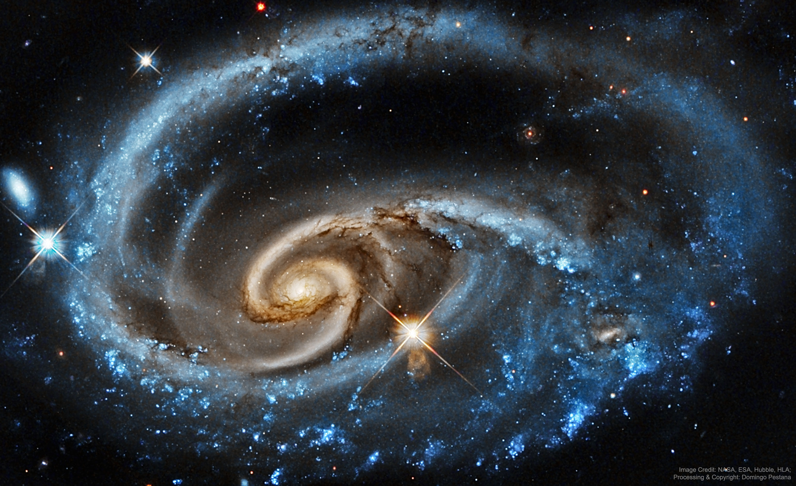

Huge in size
The Milky Way is more than 100,000 light-years across, which means it is unimaginably large.
Explore our home galaxy
BigPlanetarium is a Bristol-based educational planetarium. This prototype introduces the Milky Way in a simple, engaging and accessible way so more people can enjoy learning about space.

The Milky Way is the galaxy that contains our Solar System. It is a large spiral galaxy made up of billions of stars, as well as gas, dust and planets. Our Sun is located in a smaller region called the Orion Arm. From Earth, the Milky Way can sometimes be seen as a faint band of light stretching across the night sky. Studying the Milky Way helps us understand where our Solar System is located in space and how galaxies are formed and organised.
The Milky Way is more than 100,000 light-years across, which means it is unimaginably large.
Earth and the other planets orbit the Sun, and the Sun itself orbits the centre of the Milky Way.
From dark places away from city lights, the Milky Way can appear as a pale band of light across the sky.
More information: Wikipedia: Milky Way | NASA: Solar System
Press the button to reveal a random astronomy fact.
A fact will appear here.
Watch the latest official NASA Artemis video on the source page.